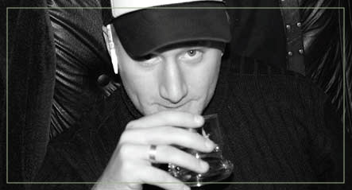

 |
I've been seeing a lot of buzz about Super Size Me – the newest entry in the Michael Moore-style over-the-top documentary film category – and, according to the New York Post, it apparently “explores the obesity epidemic that plagues America today.” Some poor sap, Morgan Spurlock, spent a full month eating nothing but McDonald's for breakfast, lunch and dinner. He gained 25 pounds, raised his cholesterol 62 points and had to fight bouts of headaches and depression. He then did what any responsible American would: he made it into a movie, which won rave reviews at Sundance. I never knew martyrdom could be so profitable. Maybe I was just feeling cynical, or maybe I was thinking of how blissful fast food can be when I treat myself once a week to a fatty burger or maybe I was just in a Republican mood , but I wanted to give the beleaguered corporate giant a break. It seemed strange to me that to make a point about the negatives of burgers and fries, Spurlock gorges himself on them. Conspicuous over-consumption, it seems, is the new In Thing. As I recall from grade-school health class, a variety of foods is integral to a healthy diet. Eating nothing but carrots for a month would most likely take some sort of toll on my body as well. So I was inclined to write the whole film off as another schlock gag, cashing in on the media exposure. He could have just as easily eaten Burger King, or smoked eight packs of Marlboros a day, or pulled a David Blaine and starved himself for the month; I'm sure they'd all be pretty destructive. McDonalds was just the lightning rod in the whole project. Then I saw a new McDonald's magazine ad. Let's leave the horrible marketing decision that is their new slogan – I'm Lovin' It – out of the discussion, but the new spot features kids playing basketball on Rollerblades. Seems to me that particular sport is a niche market that should remain untapped, but the text tells you that this skating b-baller is going to devour a “Double Quarter-Pounder with Cheese. And some fries. Like I did your game.” Not only does he ball on skates, but he's jonesin' for a burger. This is surely the way to stay in tip-top shape for street hoops , because it sure worked wonders for Spurlock. Since when did a Quarter-Pounder become fuel for the big game? To think all these years I had it pegged as just a greasy hangover remedy. Nothing's safe from the marketing spin, because suddenly we're all eating power foods. It used to be simple, when Wheaties was the Breakfast of Champions, but now we have Quarter-Pounders with Cheese, the Meal of Rollerblade-Wearing Basketball Players Everywhere, and Michelob Ultra, which is the new Gatorade , judging from all the swimming and tennis playing in their new TV spots. Call me old-fashioned, but I always thought beer and burgers were best suited to the bar, not the court or the pool. That wavering benefit-of-the-doubt pity vote I was going to give McDonald's in the Super Size Me debate evaporated pretty quickly tried once they tried to tell me every competitive sports kid in the country needs a burger or two. The movie's not blame-free, either: don't treat me like an idiot, telling me eating a lot – by “a lot,” I mean an obscene amount – of fast food is bad for me. By the way – the new issue of 606? I'm Lovin' It. Enjoy. |